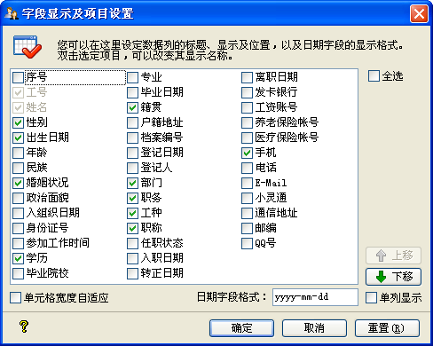

| 字段显示及项目设置 |
|
字段显示设定显示在员工信息列表中的字段，其界面如下图所示：  这里列出了所有可以显示在列表中的字段选项，系统默认只显示一部分，其中的工号、姓名为必选项。您可以自由设定要显示的员工信息字段的标题 ，方法是双击您要更改的项目标题，点击[确定]后保存为下次可用。 其中[单元格宽度自适应]选项 ，标识显示员工信息字段的单元格，只否根据单元格中的内容自动调整单元格的宽度。若不勾选，则员工信息显示表格将依据程序所设定宽度显示员工信息。 日期字段显示格式：此选项决定日期字段的显示格式，默认为yyyy-mm-dd格式，如1990-10-09；您可以设定自己想要显示的格式，如想要显示为1990.10，则设为yyyy.m即可。 您若是想要调整字段在表格中的显示次序，请点击[上移]、[下移]按钮来实现。 [重置]功能使其所显示的字段为程序默认设置。 |